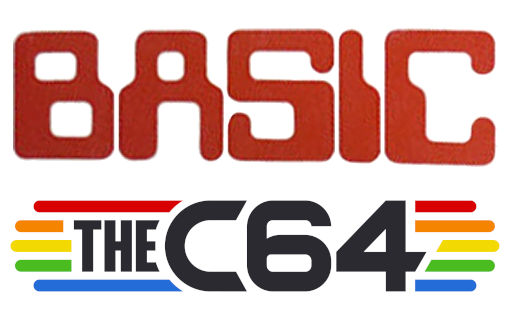

Basic y Commodore 64
Contents
Basic y Commodore 64#
{kind=link}
Funcionamiento del Commodore 64 y Basic ejecutado desde un equipo réplica TheC64 Maxi.
Índice
Funcionamiento del Commodore 64#
Teclas#
RETURN: Su funcionamiento base es similar a la tecla Intro de un teclado actual, efectuando un salto de línea o ejecutando un comando.
SHIFT: Su funcionamiento base es similar a la tecla Mayúscula de un teclado actual, al mantenerla pulsada y presionar una tecla se dibuja el caracter izquierdo bajo las teclas, también ejecuta el comando que se encuentra textualizado arriba en las teclas de comandos dobles.
SHIFT LOCK: bloquea mayúsucula, en la pantalla de los TheC64 se puede simbolizar arriba a la derecha una flecha hacia arriba indicando que esta presionada la tecla.
CRSR (ambas teclas): Permiten moverte a través de la pantalla según indican las flechas, la primera hacia abajo y la segunda hacia la derecha. Para ir en sentido contrario se mantiene pulsada la tecla SHIFT y cambiarán al sentido opuesto.
INST - DEL: Borra caracteres y con la tecla SHIFT presionada añade un espacio para insertar un caracter. Por defecto al situarnos en un caracter y escribir se reemplaza.
RESTORE: presionando la tecla RUN - STOP junto a RESTORE se restaura la pantalla a su estado inicial.
CTRL: Permite cambiar el color de la fuente manteniendo CTRL y pulsando entre el 1 al 8, también se puede cambiar ese color por relleno pulsando 9 para habilitarlo y 0 para deshabilitarlo.
THEC64: si se pulsa junto a SHIFT se cambia de mayúsculas a minúsculas y viceversa (todas las letras). Se puede acceder a colores adicionales pulsando esta tecla y cualquier número del 1 al 8. También se puede pintar los caracteres dibujados a la izquierda de cada tecla.
Cargando Discos (Pendrive USB)#
El TheC64 admite pendrives formateados en FAT32. Hay dos formas de montar un disco:
Gráfica: Se accede al menú desde el Joystick, a Media access o Acceso multimedia y se pulsa sobre el archivo que queremos montar.
Automática: Nombrando al archivo THEC64-drive8.d64, de esta forma lo reconocerá y montará automáticamente.
Atención
El montaje automático se realiza al encender el TheC64 y el archivo debe ser de tipo d64.
Formatos de montaje#
Según la extensión del archivo a montar este será de un tipo de soporte distinto, estos son los más comunes en TheC64:
d64: Disco de 5.25 pulgadas
t64: Cinta de Cassete
crt: Cartucho
Sintáxis BASIC#
El Commodore 64 utiliza como sistema una interfaz en línea de comandos bajo el lenguaje de programación Basic por defecto.
Programa común en BASIC:
10 PRINT"HELLO WORLD"
20 GOTO 10
Cada número previo al código 10 20 simboliza la línea en la que se encuentra.
Tipos de datos#
Cadenas de texto:
PRINT "texto de prueba"Números enteros:
PRINT 64Números decimales:
PRINT 32.388
LET Variables#
Asignación de valores:
1LET NOMBRE$="Guillermo"
2LET EDAD=34
Nota
Para cambiar el contenido de una variable se hace del mismo modo que la asignación.
Nota
Si queremos guardar una cadena de texto en un color específico cuando abramos comillas presionamos CTRL+[1-8] osea un número del 1 al 8. Aparecerá un galimatías que ignoramos y escribimos la cadena de texto. Cerramos comillas y guardamos. Al imprimir se mostrará el texto con el nuevo color y este quedará fijado al cursor.
PRINT#
Con este comando se imprime en pantalla:
Ejemplo básico de print:
PRINT"HOLA AMIGO"y presionar tecla RETURNImprimir variable tipo cadena:
PRINT NOMBRE$Imprimir variable tipo numérica:
PRINT EDAD
Para limpiar el contenido de pantalla con PRINT: se escribe PRINT CHR$(147) y se pulsa RETURN
SAVE#
Se puede guardar programas creados en TheC64 en imágenes de disco d64 . Para ello insertamos un pendrive vacío (al encender la máquina esta creará el archivo THEC64-drive8.d64) y escribimos las siguientes líneas:
La primera línea:
10 PRINT"HELLO WORLD"y se pulsa RETURNLa segunda línea:
20 GOTO 10y se pulsa RETURNLa tercera línea:
SAVE"HELLOWORLD",8y se pulsa RETURN
Con la primera línea estamos imprimiendo una cadena, la segunda línea dice que regrese siempre a la primera línea y la tercera línea graba el programa en la imagen de disco THEC64-drive8.d64. Se puede cargar en nuestro pc y ejecutar en el emulador vice para ver el resultado.
También podemos ejecutarlo en TheC64 siguiendo las instrucciones del punto Ejecutar Discos.
LOAD#
Hay dos formas de cargar programas en memoria a partir de un disco:
Para cargar el contenido del disco o la lista de programas en memoria se escribe:
LOAD"$",8y presionar RETURNPara cargar el contenido de un programa desde un disco en memoria se escribe:
LOAD"*",8y presionar RETURNPara cargar en memoria un programa de la lista se escribe:
LOAD"HELLOWORLD",8y se presiona RETURN
Nota
El símbolo $ va a cargar los programas del disco mientras que * nos cargará en memoria el código del programa.
LIST#
Lista el contenido de la memoria. Se escribe LIST y teclea RETURN
Editar contenido de un programa#
Para añadir o cambiar líneas se ejecuta del siguiente modo:
#. Se escribe LIST y teclea RETURN
#. Se escribe el comando con la línea a crear o modificar y su contenido: 15 PRINT"LINEA EXTRA"`
#. Si queremos guardar escribimos ``SAVE"HELLOWORLD",8 y se almacenara.
Atención
Si se ejecuta el programa antes de guardar la edición esta no se guardará. Cuando se insertan o cambian líneas a continuación se debe guardar.
RUN#
Ejecuta un programa cargado en memoria escribiendo RUN y presionando la tecla RETURN
Ejemplo para ejecutar un disco#
Cuando tenemos un disco se ejecutará de la siguiente forma:
Se escribe el comando
LOAD "*",8y se pulsa la tecla RETURN, esto leera la unidad de disco y lo cargará en memoria.Ahora para ejecutar se escribe el comando
RUNy se presiona la tecla RETURN.
Atención
Para detener la ejecución de un programa se pulsa la tecla: RUN - STOP.
Nota
Para saber como montar discos vease más arriba: Cargando Discos (Pendrive USB)
OPERACIONES MATEMÁTICAS#
Las operaciones matemáticas comunes por defecto son:
Sumar:
PRINT 6+23Restar:
PRINT 22-12Multiplicar:
PRINT 7*2Dividir:
PRINT 8/4`Raices cuadradas:
PRINT SQR(4)Potencias:
PRINT 2↑3
Ecuaciones#
Ejemplo de ecucaciones:
PRINT (2*4+6)/2-1. Esto nos da 6.
CÓDIGOS ASCII#
Los códigos ASCII son un estandar. Con ellos no solo podemos localizar letras en mayúsculas o minúsculas sino que también podemos cambiar colores o ejecutar otras instrucciones del teclado.
Para utilizar un código ASCII en Basic hay se usa la sentencia CHR$(30) en la cual introducimos un número ASCII entre paréntesis.
Colores ASCII#
Tabla de colores:
Color |
ASCII |
|---|---|
Blanco |
5 |
Negro |
144 |
Rojo Claro |
150 |
Rojo |
28 |
Cian |
159 |
Morado |
156 |
Verde claro |
153 |
Verde |
30 |
Azul claro |
154 |
Azul |
31 |
Amarillo |
158 |
Naranja |
129 |
Marrón |
149 |
Gris claro |
155 |
Gris medio |
152 |
Gris oscuro |
151 |
Color invertido on |
18 |
Color invertido off |
146 |
Impresión de cadena con color usando código ASCII:
PRINT CHR$(158); "Impresión amarillaGuardar cadena de un color concatenando codigo ASCII: LET C$= CHR$(152)+»GRIS»``